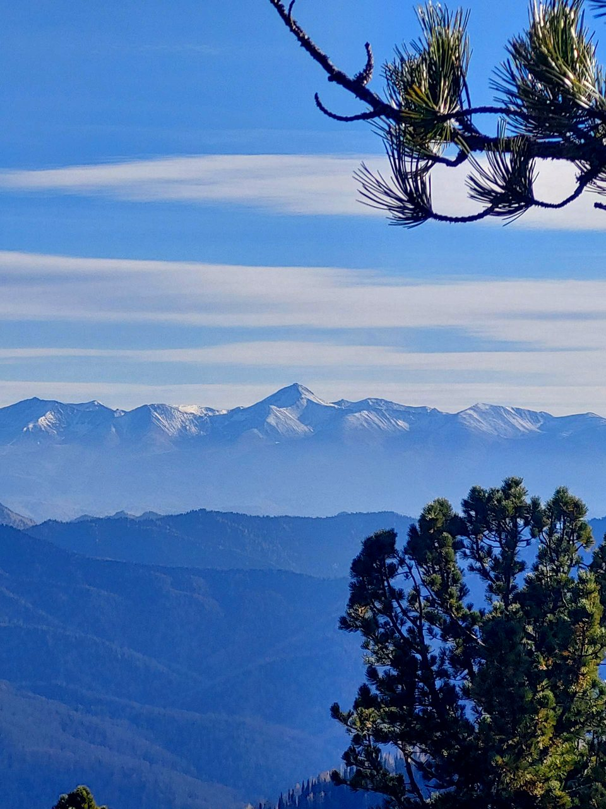
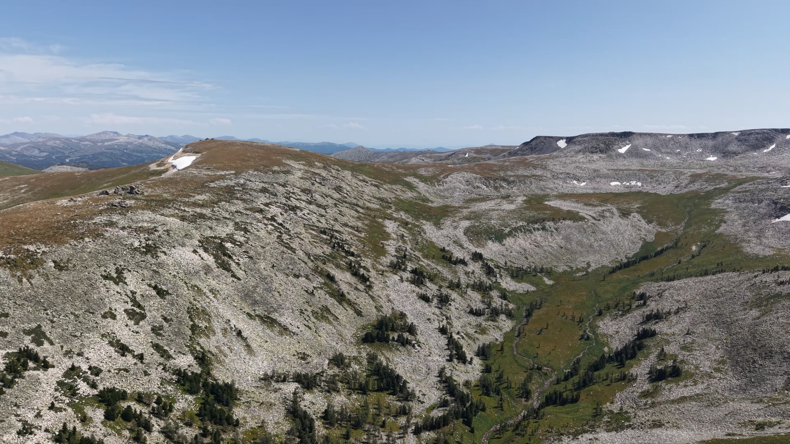
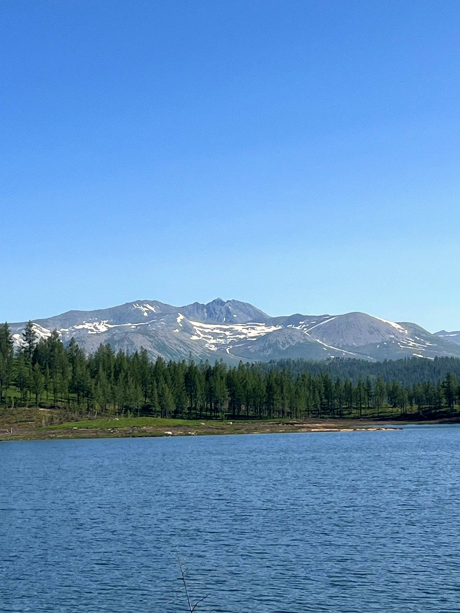
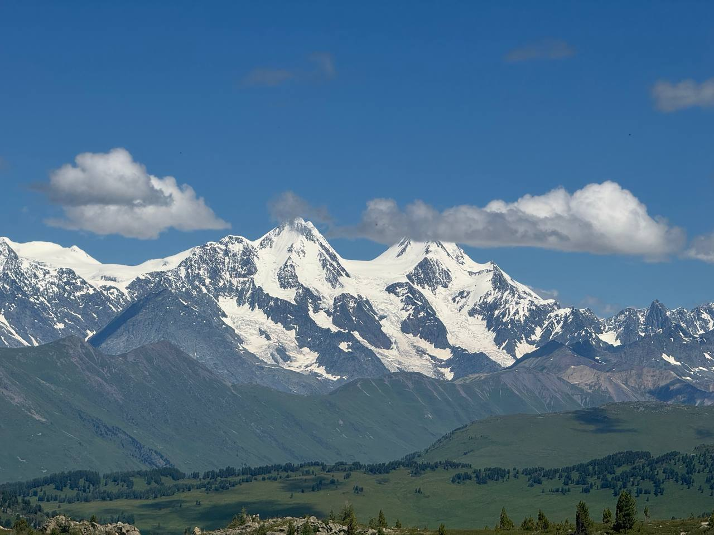

Усть-Каменогорск окружён горами — и это не просто красивые слова. В радиусе 100–200 километров от города находятся места, которые по красоте не уступают знаменитым курортам, но при этом совершенно не заезжены. Нужен только подходящий автомобиль, время и понимание куда ехать.
Мы — команда Asferia Adventure из Риддера — работаем в этих горах с 2023 года. За это время провели сотни туров и знаем каждый маршрут изнутри. В этой статье расскажем о шести направлениях: от спокойных однодневных поездок до настоящих экспедиций.
1. Радоновое озеро — must-have выходных
Если вы ещё не были на Радоновом озере — это первое место, куда стоит поехать. Высокогорное озеро на высоте 1920 метров под пиком Ворошилова (2776 м) — самой высокой вершиной в окрестностях Риддера.
Уникальность в том, что сюда можно добраться на автомобиле — по серпантину, проложенному ещё в 1970-х годах во время геологоразведки. Дорога сама по себе — половина впечатления. По желанию можно дополнить поездку восхождением к пику — наши гиды сертифицированы и проведут группу безопасно.

Радоновое озеро
Серпантин, горное озеро насыщенного цвета, восхождение к пику по желанию. Всё включено: гид, горячий обед, снаряжение.
Подробнее о туре2. Перевал Звёздный — панорамы без экстрима
Если хочется гор, панорам и красивых фотографий — но без экстрим-бездорожья — перевал Звёздный идеальный выбор. Маршрут средней сложности по долине реки Уба, финал — плато на высоте ~1800 метров с видом на Ивановский хребет.
По пути заезжаем в старообрядческие деревни Ермолаевка и 8 Марта, основанные в XVIII веке беглыми раскольниками. Это один из немногих маршрутов, где природа сочетается с реальной историей региона.

Перевал Звёздный
Долина реки Уба, старообрядческие деревни XVIII века, панорама Ивановского хребта. Подходит для любого уровня подготовки.
Подробнее о туре3. Устье Богданихи — место, которое знают единицы
Это наш авторский маршрут. Мы прокладывали его сами — и, насколько нам известно, кроме наших машин здесь больше никто не ездил. Конечная точка — высокогорный перевал над устьем реки Богданиха с видами на альпийские луга и окружающие хребты.
Дорога идёт через высокогорную тайгу, горные броды и болотистые участки. Это однодневный тур с экстрим-дорогой, но именно ощущение первопроходца делает его особенным. Наша команда называет это место любимым.

Устье реки Богданиха
Маршрут, который мы открывали сами. Альпийские луга, таёжный лес, перевал с панорамными видами. Других здесь нет.
Подробнее о туре4. Малоульбинское водохранилище — история и природа
Для тех, кто готов провести в горах 2–3 дня. Малоульбинское водохранилище — рукотворный горный резервуар на высоте 1600–1800 метров. Его строили в начале XX века военнопленные и политзаключённые ГУЛАГа. В годы Великой Отечественной оно обеспечивало Риддер водой и электричеством — а город, в свою очередь, поставлял свинец для боеприпасов.
Дорога к нему проходит через заброшенные деревни, основанные ещё до появления Риддера. Первая плотина сохранилась — по ней можно пройти и оценить масштабы сооружения. Ночёвка в палаточном лагере на берегу, рассвет над водой — это то, что люди вспоминают долго.

Малоульбинское водохранилище
Горный резервуар с вековой историей, заброшенные деревни, ночёвка в палатках на берегу. Полное снаряжение предоставляем.
Подробнее о туре5. Убинский водопад — для настоящих искателей
Самый сложный маршрут в нашей линейке. 110 километров дороги: грунтовка, потом лютое бездорожье — броды по капот, болота, грязь, несколько горных перевалов. В долине реки Убинки — один из крупнейших горных водопадов региона, а такие на горных речках встречаются редко.
Последний участок проходит пешком. Финал — грохочущий водопад высотой несколько десятков метров. После — рыбалка на горного хариуса, лагерь у реки, костёр. Это тур для людей, которые знают зачем едут.

Убинский водопад
110 км экстрим-бездорожья, редкий горный водопад, рыбалка на хариуса. Для тех, кто ищет настоящее приключение.
Подробнее о туре6. Катон-Карагай — флагманская экспедиция
Если времени больше и хочется увидеть Восточный Казахстан по-настоящему — это Катон-Карагайский национальный парк. Озеро Маркаколь, Рахмановские ключи (термальные источники на 1700 м), перевал Радостный, озеро Язевое — всё это в рамках одной гибкой программы на 4–6 дней.
Мы дополняем стандартные маршруты собственными оффроуд-направлениями — туда, куда большинство туроператоров просто не едет. Проживание по выбору: гостевые дома или палаточный лагерь.

Катон-Карагай
Маркаколь, Рахмановские ключи, Язевое, перевал Радостный. Плюс эксклюзивные оффроуд-маршруты от нашей команды.
Подробнее о туре